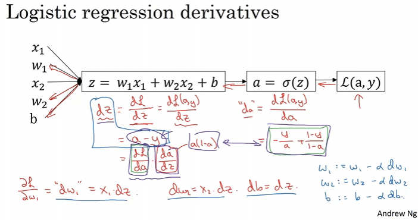

Neural Networks and Deep Learning - 1
Week 01: Introduction
1. What is a Neural Network?
Basic Neural Netwrok 가 무엇인지에 대한 간단한 설명
Input feature of X -> Output Y
2. Supervised Learning with Neural Networks
CNN, RNN 에 대한 간단한 설명
- RNN 은 1-demensional sequence data 에 적합
Structured Data vs. Unstructured Data
Structured Data: 표로 정리가 가능한 데이터
Unstructured Data: Audio, Image, Text, …
3. Why is Deep Learning taking off?
데이터 양에 따라 딥러닝의 성능이 점점 더 좋아짐
그렇다면 반대로 데이터의 양이 작다면 엔지니어링에서 크게 성능이 바뀔 수 도 있음
Week 02: Basics of Neural Network programming
1. Binary Classification
- Input X (ex. Image) 에 대해 output Y 가 0 혹은 1 로 나오는 것
2. Logistic Regression
Sigmoid Function
\[ \sigma(z) = \frac{1}{1+e^{-z}} \]
z → ∞ : sigma(z) = 1
z → -∞ : sigma(z) = 0
z → 0 : sigma(z) = 0.5
Logistic Regression’s parameter
W, nx -> dimensional vector
b, a -> real number
\[ \hat{y} = \sigma (w^T x + b) \]
3. Logistic Regression Cost Function
Loss function
\[ \mathcal{L} (\hat{y}, y) = -(y log\hat{y} + (1-y)log(1-\hat{y})) \]
if y=1 → y hat is being large
if y=0 → y hat is being small
Cost function
- Average of loss function
\[ J(w,b) = \frac{1}{m}\Sigma_{i=1}^{m} \mathcal{L}(\hat{y}^i, y^i) \]
Difference between the cost function and loss function for logistic regression
The loss function computes the error for a single training example
The cost function is the average of the loss function of the entire training set
4. Gradient Descent
W (weight) is updated by next function (Bias 는 일단 생각 안함)
\[ w := w - \alpha \frac{dJ(w)}{dw} \]
5. Derivatives(미분)
- 기울기가 일정한 1차 함수에 대한 미분
6. More Derivative Examples
- 기울기가 지점마다 변하는 2차 함수 이상에 대한 미분
7. Computation Graph
- foward propagation and backward propagation 에 대한 간단한 설명
8. Derivatives with a Computation Graph
- Chain Rule
\[ \frac{dJ}{da} = \frac{dJ}{dv} \frac{dv}{da} \]
9. Logistic Regression Gradient descent
